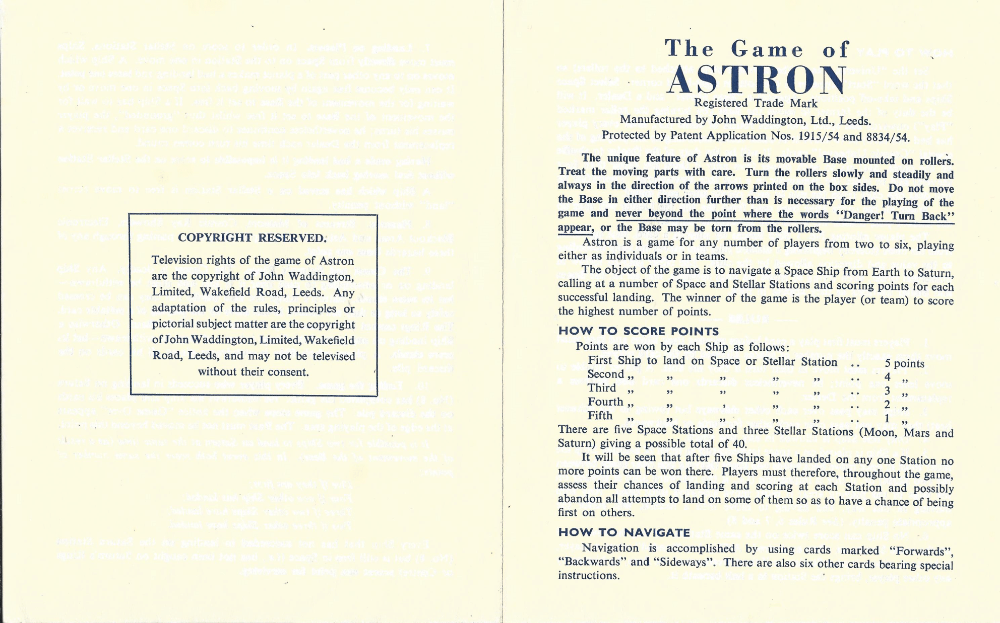
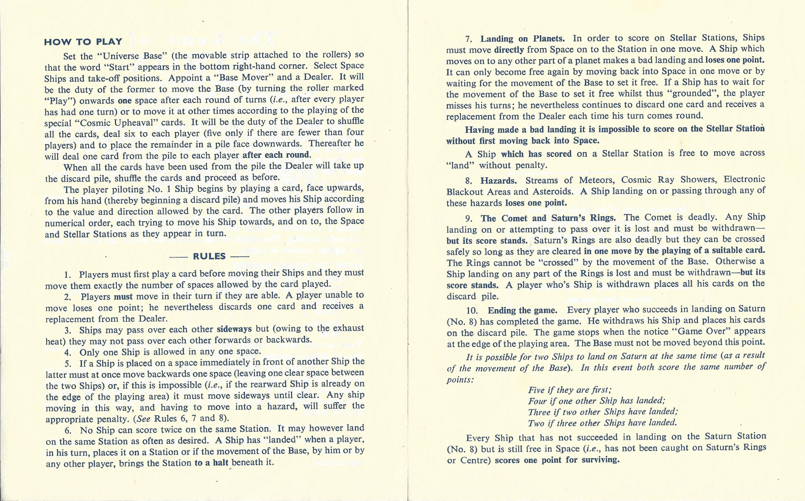
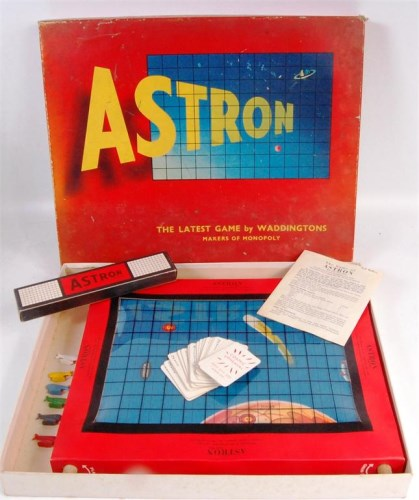

What is it?
- Astron was a project I made during first year as part of an attempt to preserve a family favourite board game, which is particularly rare. Unfortunately, we only have the one copy, and due to moving parts, it’s quite fragile. As part of the project, I created an accurate version of the board digitally from photos I’d made of our copy, and followed the rules for my specification as best as I could. At the time, the language I was most familiar with was Java, and I wanted to put a lot of what I’d learned in year 1 to the test, with the addition of creating my own extremely rudimentary rendering engine, which used the graphics canvas, and wasn’t particularly optimised.
Why I made it
- I’d been saying to the relevant relatives for a long time that I’d make a game to demonstrate since I’d started programming, and after I’d learned some of the required skills, I thought it’d be a good time to have a go. Not to mention, there weren’t any parts of the course that year (or for the one after) which would involve making anything like a game. As such, I decided it would be a good time to get a head start, even if I never came back to the project, or used any of the techniques I learned while making it.
How it works
- Astron is a game in which 2-6 players compete to land on as many platforms as possible. The first to arrive on a platform receives the maximum
5 points, the next 4, the third 3, and so on. The players must also avoid hazards, some of which deduct a single point after landing, others of
which will knock the players off the board instead. The players are able to move their ships with the use of movement cards they hold a maximum
of 6 cards, with directions and numbers (for example 2 sideways, 3 forward, 1 back), and special cards, including “homing devices” which allow
the player to move diagonally in any direction, or cosmic upheavals, which move the board on an additional 1 or 2 spaces as denoted by the card.
After each player has played their card for that turn, the board is then moved on by 1 space, forcing the players to plan their next moves.

Front and back cover of the rule book

Inside of the rule book
For the program, I decided to use the HTML canvas and Java. I would display a grid of images, which moved on each turn, and I created a finite deck of cards from a hard coded array, which allowed a level of realism in the card shuffling. The ships were then drawn directly on top of the board to display their relevant positions. I also wanted to create automatic scoring, an automatic game loop which allowed players to play their cards, rather than entering movements, and implement features such as forcing a ship which is 1 space behind another to be pushed a space backwards as denoted by the rules. Observations
- Looking back through the code, I’m very surprised it actually worked at all. Half the features are missing of course, as I didn’t have time to implement them properly before I was planning to show it off, and the features that are there seem to be put together with the programmatical equivalent of duct tape and string. This may however just be the curse of improving. Astron was an enormous multi-class project I wrote from scratch in my spare time sporadically between assignments, which in first year were more numerous, but shorter, and since then, I’ve learned a lot in terms of managing projects of a similar scale. I’ve also learned more standard ways to implement many techniques which I was attempting to add (such as what I now realise is collision detection and resolution), however, the quantity of code I wrote was certainly a good way to help drive home core concepts of programming, if only in Java.
How successful has it been?
- Ultimately, on the release day (functionally it was a release day, and this was my first game proper), I ended up breaking the code which took player commands in because I was trying to fix problems with collision resolution when two ships tried to go on the same square, without the kind of knowledge that I have now. Also, graphically, there were problems, possibly due to the power of the machine, although the actual number of objects drawn per screen was extremely low, so I suspect this was an issue with using the HTML canvas. I also believe there are a huge number of off-by-1 errors which I can’t find even now. Finally, after I’d finished showing off the project on the first day (I used the “developer” inputs to move ships myself, and we played with real cards), I was on holiday for a few more days, during which I lost momentum on the project. Moving on from that onto exams, I found I didn’t have any time to work on it anymore, and I’ve abandoned it somewhat formally since. Possibly due to family members being more lenient though, the overall project was rated quite highly, if noticeable clunky due to the amount I had to type in between turns to facilitate continuity.
- The long white screen in the video is the set up before the game.
What would I do differently if I started over?
- I’m still somewhat tempted to go back now that I have an actual graphical engine I could make something like this a lot more easily with, however I have a lot more projects to work on, and an ideal version of Astron would entail the use of mobile clients (or a mobile client which allows turn taking) controlling each ship over a local network, and other various elements I’m not sure on how to implement. It would certainly be an interesting challenge, and I know I’d use shuttle engine for the main program with a modified game loop and collision resolution class, along with a simple mobile app which allows multiple players to play on one device, then pass around the room. At the very least though, I could use the original textures I created, which would preserve some of the character. Finally, I’d also make some additions to the game myself. While the artwork was acceptable, I’ve done a lot more digital work since, and could create something more stylish than what I made in paint, using pixel art for individual tiles. I would also add random generation, AI and new mechanics potentially.
How I've been able to use it
- It was certainly an interesting project, especially considering I had no supervision at all beyond the rules of Astron. It was also my first attempt at making any particularly large project, which doesn’t necessarily mean an awful lot, as if anything, many of the programs I’ve written since tend towards being more elegant and concise when I can manage it, however, it was certainly a confidence booster in being able to think “this may be big, but Astron was bigger”. Interestingly enough, I checked the size of that project and other projects I've done since, and Astron, while large (2615 lines) is much smaller than some of my recent projects, with Shuttle Engine standing at 5350, not including my year 3 dissertation, which is 3019 including some of the tests. Despite this, and perhaps as a result of having started it early enough into my programming education, it still remains a project I look back on as being larger than anything else I've done, regardless of accuracy. It’s also been highly educational in terms of the many pitfalls of larger projects, especially since I wrote this during a formative phase in my programming education, even individual methods seem to use vastly different programming techniques, which, while an interesting way to track my accomplishments, also probably negatively affect the running of the program, not to mention readability issues.
